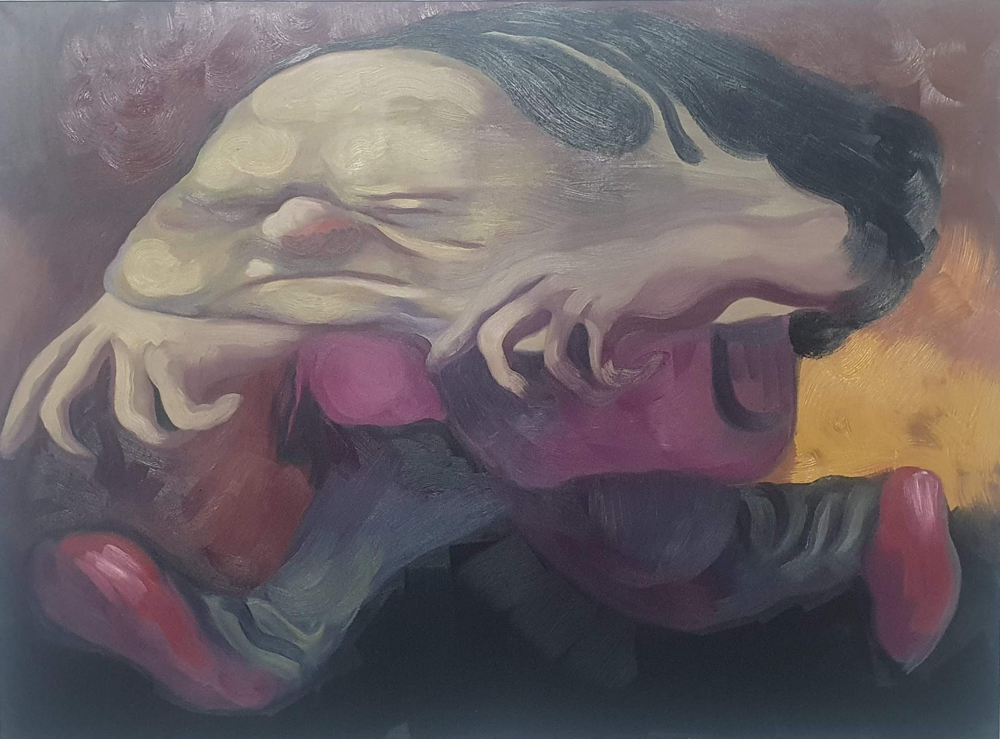

There is no escaping the gravity of this situation as a gentleman compresses under the weight of an implied force. Smartly attired in burgundy with matching footwear an urgency propels him despite his obvious discomfiture.
The body horror continues with receding yet lustrous locks pushed back as if in a wind tunnel and head and shoulder being forced together. The cheeks distend with an expression of burden with the eyes closed shut but not in contemplation. The fingers like claws speak of the immediacy of sharpened consciousness. The talon like grasp is an involuntary reaction.
Within this casserole of comedy and pathos, the paint swirls in circles at points throughout the canvas. The white-green pallour of the skin offsets against the charcoal base and the fire receding above it. Despite the cartoonish millieu this stands as a poignant vignette of life within a suffering body. How much can one take before breaking into either confession or flight?
Other people cannot be said to learn of my sensations
only from my behaviour,—for
I cannot be said to learn of them.
I have them.
... it makes sense to say about other
people that they doubt whether I am in pain;
but not to say it about myself.
Ludwig Wittgenstein
Philosophical Investigations
Seen at the Bomb Factory Art Foundation in Holborn, London as part of a solo exhibition showing from 20 March to 3 April 2026.